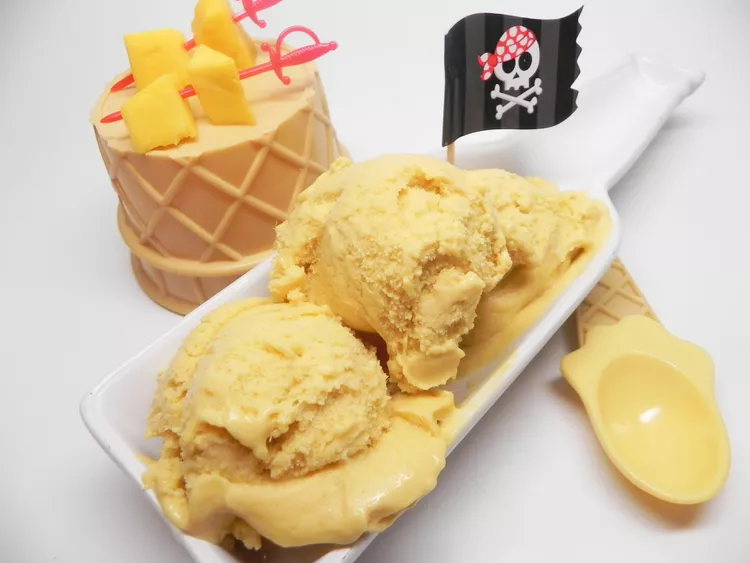

Odin Recipes
Mango Icecream

Description
Tired of the same old daily routine and in need of a mental escape? Whip up some of this simple adult ice cream, crawl into a hammock, close your eyes, and you just might feel like you are somewhere in the Caribbean. Okay, maybe not, but it's worth a shot and the ice cream is delicious. The hardest part is the wait. Argh, matey! Garnish with additional cubed mango or other fruit of your choice, if desired. Hmmm...we only have one kind here. I used Kensington Pride mangos (green skin). They are about the size of a large pear.
Ingredients
- 4 mangoes, peeled and cubed
- 2 cups heavy whipping cream
- ¾ cup packed dark brown sugar
- ¼ cup light corn syrup
- 4 tablespoons spiced rum
- ½ teaspoon kosher salt
Steps
- Combine mangoes, cream, brown sugar, and corn syrup in a blender or food processor. Blend on high for 30 seconds.
- Transfer to an airtight container. Stir in spiced rum and salt. Refrigerate, 8 hours to overnight.
- Pour mixture into an ice cream maker and freeze according to manufacturer's instructions, about 20 minutes. Transfer to an airtight container and freeze until firm, about 4 hours.